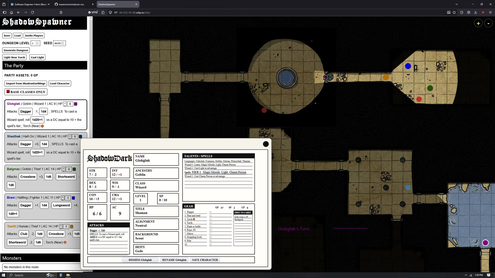

Primary project - deployed full-stack system
ShadowSpawner
JavaScript SPA, canvas rendering, Python/Flask, SQLModel, Postgres, Docker, nginx, AWS EC2
A deployed procedural dungeon web app with account-backed save/load, fog-of-war exploration, party state, character sheets, and production-style deployment.
- Owned the frontend dungeon engine: deterministic generation, canvas exploration, map tokens, room interactions, and visibility state.
- Modeled
visibleNowandexploredEverso rendering, interaction, and persistence stayed consistent. - Integrated against backend JSON contracts for saved runs, auth, ownership rules, and multiplayer host links.